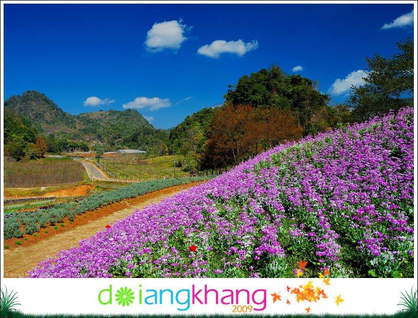

 |
| อันดับ 2 : ดอยอ่างข่าง สวิสเซอร์แลนด์เมืองไทย ตั้ง อยู่ที่ อ.ฝาง จ.เชียงใหม่ นับเป็นสถานที่ท่องเที่ยวสำหรับคู่รัก ซึ่งมีจุดเด่นเฉพาะตัวตรงที่อากาศเย็นสบายตลอดปี และยังมีบรรยากาศของธรรมชาติที่สวยงามอีกด้วย นอกจากนี้มี “สถานีเกษตรหลวงดอยอ่างขาง” อันเป็นอาคารไม้ดอกเมืองหนาว มีสวนดอกไม้ซึ่งจัดตกแต่งไว้อย่างสวยงาม โดยเฉพาะ ‘สวนแปดสิบ’ ที่สวยงามมากจนเป็นที่ยกย่องว่าเป็นเสมือนสวิตเซอร์แลนด์เมืองไทยทีเดียว สำหรับผู้ที่สนใจจะไปเที่ยวหมู่บ้านชาวเขาที่อยู่บริเวณใกล้ ๆ ก็มีมากมายเช่นกัน เป็นต้นว่า หมู่บ้านขอบด้ง หมู่บ้านของชาวเขาเผ่ามูเซอดำและมูเซอแดง ก็จะได้พบกับวิถีชีวิตที่เรียบง่าย มีสินค้าเกษตร และของที่ระลึกฝีมือชาวบ้านให้เลือกซื้อ หรือจะไป หมู่บ้านนอแล ของชนเผ่าปะหล่อง หรือดาละอั้ง ก็จะมีไกด์เด็กน้อยคอยพาชมทิวทัศน์ และเล่าเรื่องราวของชนเผ่าให้ฟัง |